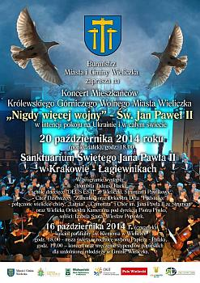
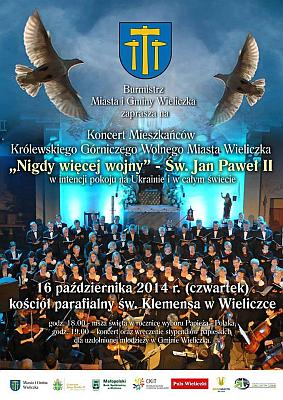
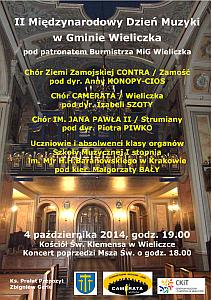
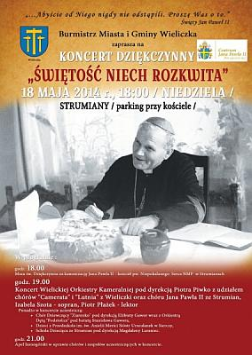
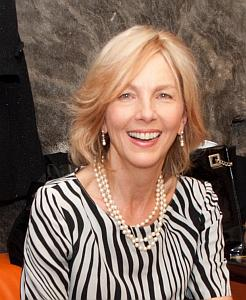
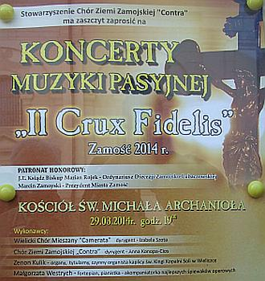
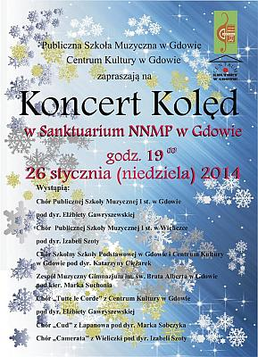
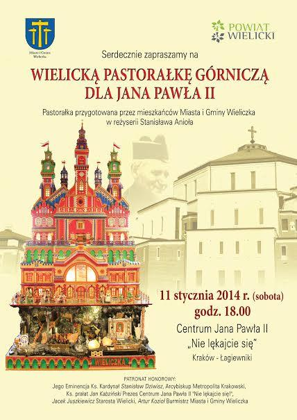

Aktualności archiwalne
Rok 2014
2014-12-19
Kolędowe spotkanie Cameraty czytaj dalej ...2014-12-19
Wieczór kolęd z UTW czytaj dalej ...2014-12-12
Spotkanie w CKiT czytaj dalej ...2014-12-01
Barbórka w naszej wielickiej kopalni. czytaj dalej ...2014-11-11
Narodowe Święto Niepodległości w Wieliczce czytaj dalej ...2014-11-08
Jubileuszowy X Międzynarodowy Festiwal Rybnicka Jesień Chóralna im. Henryka Mikołaja Góreckiego.RYBNIK 7-9 listopada 2014.
I my tam jedziemy!!! czytaj dalej ...
2014-10-24
Okazja do wspomnień, czyli jubileusz 15 lecia Powiatu Wielickiego w Kampusie Wielickim. czytaj dalej ...2014-10-20

W Sanktuarium Świętego Jana Pawła II w Łagiewnikach odbył się Koncert Mieszkańców Królewskiego Górniczego Wolnego Miasta Wieliczka pt. „Nigdy więcej wojny” - Św. Jan Paweł II, w intencji pokoju na Ukrainie i w całym świecie.
czytaj dalej ...
2014-10-16

Koncert w kościele parafialnym św. Klemensa w Wieliczce „Nigdy więcej wojny”- św. Jan Paweł II
czytaj dalej ...
201-10-04
II Międzynarodowy Dzień Muzyki w gm. Wieliczka.
czytaj dalej ...
2014-10-03
Dzisiaj śpiewamy dla seniorów, czyli na rozpoczęciu VII semestru WIELICKIEGO UNIWERSYTETU TRZECIEGO WIEKU. czytaj dalej ...2014-09-19do21
Wyjeżdżamy na warsztaty wokalne do Wiśniowej. czytaj dalej ...2014-06-29
Zakończenie roku „szkolnego” w Cameracie. Jedziemy w góry. czytaj dalej ...2014-05-31
Na Rynku Górnym ma miejsce niecodzienne wydarzenie – po raz pierwszy w historii ponad 500 artystów, czyli 17 grup: zespołów, chórów i orkiestr działających pod patronatem Centrum Kultury i Turystyki w Wieliczce prezentuje swoje umiejętności w formie warsztatów, prezentacji, koncertów, happeningów. czytaj dalej ...2014-05-24
Dzisiaj uczestniczymy we wspaniałej uroczystości. Nasza „Prezeska” wydaje za mąż córkę, więc na takiej uroczystości nie może zabraknąć CAMERATY. Ślub w kościele Św. Piotra i Pawła w Krakowie i oczywiście my oprawiamy muzycznie uroczystość. czytaj dalej ...2014-05-18
Koncert Dziękczynny „Świętość niech rozkwita”, w kościele pw. Niepokalanego Serca NMP w Strumianach.
czytaj dalej ...
2014-05-04
Ostatni dzień w Czechach. czytaj dalej ...2014-05-03
Kolejny dzień w Pradze. Dzisiaj uroczysty, ponieważ mamy koncert 3-majowy w Kościele oo. Dominikanów pw. Św. Idziego.Koncert zorganizowała Polska Rzymskokatolicka Parafia w Pradze - proboszcz fr. Hieronim Kaczmarek OP. czytaj dalej ...
2014-05-02
Drugi dzień pobytu w Pradze. czytaj dalej ...2014-05-01
Camerata wyjeżdża do Pragi na koncert.Wyjazd jest możliwy dzięki sponsorom:
Firma Regis z Krakowa - nasz stały sponsor
Powiat Wielicki
no i oczywiście członkowie Cameraty
oraz nasi fani, którzy z nami jeżdżą na wszystkie wyjazdy. czytaj dalej ...
2014-04-27
Dziś już Świętemu - Janowi Pawłowi II śpiewamy w kościele pw. Miłosierdzia Bożego w Skawinie. czytaj dalej ...2014-04-26
Koncert z okazji kanonizacji Jana Pawła II odbędzie się w Skawinie w przeddzień kanonizacji Jana Pawła II, czyli w sobotę, 26 kwietnia. Uroczystość i koncert odbędzie się pod pomnikiem „papieskim”. Będzie to wieczorne, modlitewne spotkanie. czytaj dalej ...2014-04-04
Zebranie Cameraty.Wybraliśmy nowego prezesa a właściwie prezeskę :)Małgorzatę Achnger.

czytaj dalej ...
2014-04-02
W czwartek odbył się w Gorzkowie Koncert dedykowany bł. Janowi Pawłowi II. Koncert był poprzedzony Mszą Świętą, której przewodniczył ks. proboszcz Adam Żurad wraz z księżmi tutejszej parafii oraz ks. rektor Stanisław Kuś z Byszyc, który wygłosił kazanie. czytaj dalej ...2014-03-30
Drugi dzień pobytu w Zamościu i Zwierzyńcu. czytaj dalej ...2014-03-29
Dzisiaj wyjeżdżamy na dwa dni do Zamościa na zaproszenie zamojskiego chóru „Contra”. Bierzemy udział w koncercie MUZYKI PASYJNEJ z cyklu „II Crux Fidelis”.PATRONAT HONOROWY – j.e.ks.Biskup Marian Rojek- Ordynariusz Diecezji Zamojsko- Lubaczowskiej oraz Marcin Zamoyski -Prezydent Miasta Zamość.

czytaj dalej ...
2014-03-25
Organizacyjna pomoc Stowarzyszenia Muzycznego - Chór Camerata w Wieliczce uczniom Szkoły Muzycznej I stopnia w Wieliczce. czytaj dalej ...2014-02-17
NABÓR do naszego chóru czytaj dalej ...2014-02-01
Na zaproszenie wójta Gminy Koszyce oraz dyrektora Muzeum Ziemi Koszyckiej, chór Camerata pod dyr. Izabeli Szoty i przy akompaniamencie Małgorzaty Westrych wystąpił gościnnie w Muzeum Ziemi Koszyckiej w Koszycach z koncertem noworocznym. czytaj dalej ...2014-01-28
Wielicka Pastorałka Górnicza dla Jana Pawła II czytaj dalej ...2014-01-26
Dzisiaj po wieczornej Mszy Świętej o godz. 18.00 w Sanktuarium Matki Bożej Gdowskiej odbędzie się koncert kolęd. Udział zapowiedziało 7 chórów z Powiatu Bocheńskiego i Powiatu Wielickiego.
My też tam jedziemy.
czytaj dalej ...
2014-01-18
Solne Miasto. Tradycyjne, coroczne Spotkanie Noworoczne w sobotni wieczór, które zgromadziło rekordową liczbę uczestników – ponad 1000 osób. czytaj dalej ...2014-01-11
Wielicka Pastorałka Górnicza w Łagiewnikach 11 stycznia 2014r o godzinie 18:00 w Centrum Jana Pawła II „Nie lękajcie się” Kraków–Łagiewniki. Pastorałka przygotowana jest przez mieszkańców Miasta i Gminy Wieliczka w reżyserii Stanisława Anioła. Muzyczna oprawa chóry: Camerata z Wieliczki, Jana Pawła II ze Strumian oraz Lutnia z Wieliczki.
Patronat honorowy nad wydarzeniem objęli: Jego Eminencja Ks. Kardynał Stanisław Dziwisz Arcybiskup Metropolita Krakowski, Ks. prałat Jan Kabziński Prezes Centrum Jana Pawła II „Nie lękajcie się”, Jacek Juszkiewicz Starosta Wielicki, Artur Kozioł Burmistrz Miasta i Gminy Wieliczka. czytaj dalej ...
2014-01-06
Pierwsze wystawienie PASTORAŁKI WIELICKIEJ w Pawlikowicach. czytaj dalej ...2014-01-05
Zbliża się godzina 18.00. W kościele Św. Klemensa w Wieliczce rozpoczyna się msza, po której odbędzie się VIII WIELICKI WIECZÓR KOLĘD. czytaj dalej ...2014-01-05
Dzisiaj o godz. 10.30 Uroczysta Msza Św. koncelebrowana w intencji rychłej beatyfikacji Sługi Bożego Brata Alojzego Kosiby, z udziałem pielgrzymów z Libuszy, rodzinnej miejscowości Br. Alojzego, oprawiana muzycznie przez nasz chór. czytaj dalej ...2014-01-04
Pastorałka wielicka, pierwsza wspólna próba w Pawlikowicach. czytaj dalej ...
© Stowarzyszenie Muzyczne Chór Camerata Wieliczka
Projekt i wykonanie:  Prowadzenie strony: Małgorzata Wysocka-Cebula
Prowadzenie strony: Małgorzata Wysocka-Cebula